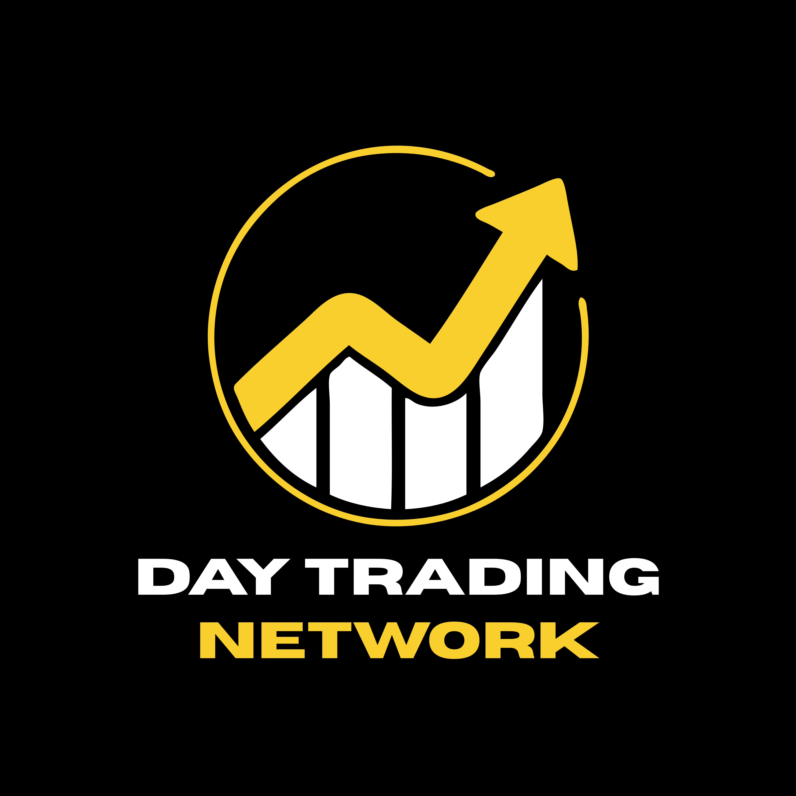

Make sense of the chart
Learn what candles, trends, support, and resistance can tell you — and why no pattern predicts the future.
MARKET BASICS
FOR THE FILIPINO BEGINNER TRADER
Learn the process. Build your discipline. Start with Theo’s Day Trading Network — a place to approach trading with curiosity, patience, and respect for risk.
Free Discord access · Beginners welcome · Education first
Understand before you put money at risk.
A QUICK WELCOME FROM THEO
Watch Theo’s welcome before you join. Start with the basics, take your time, and keep risk in view.
01 / BUILD YOUR FOUNDATION
Baguhan ka? Start here. These are the fundamentals to explore before risking real money.
Learn what candles, trends, support, and resistance can tell you — and why no pattern predicts the future.
MARKET BASICSUnderstand position sizing, stop orders, fees, and leverage. Begin with what you could lose, not what you hope to make.
RISK AWARENESSPractice on a demo account. Write down your reasoning, review mistakes, and work on patience instead of chasing every move.
PRACTICE & MINDSETMEET THEO
Theo Theodorou is the person behind Day Trading Network. Through his trading content and free Discord community, he brings together people who want to learn more about day trading.
DTN welcomes Filipino beginners who want to build a solid foundation, practise with discipline, and understand the risks involved. Start with Theo’s welcome video, explore his YouTube channel, and join the conversation in Discord.
Explore Theo’s YouTube channel ↗02 / YOUR NEXT STEPS
Start small, learn at your own pace, and bring your questions. Hindi kailangang madaliin.
Use the invitation to join DTN. Read the server’s rules and available channels when you arrive.
Browse Theo’s YouTube content and available community discussions. Note what you understand and what you want to ask.
Use demo practice, keep a journal, and reflect on your decisions. Community ideas are starting points for research.
Join the Discord using the free invitation. You don’t need to fund a trading account to begin learning.
03 / BEFORE YOU JOIN
Know what to expect before
you take the next step.
Yes. This page is designed as a starting point for beginners. Learn the terminology, explore the resources, and practice without real money before considering live trading.
The Discord invitation on this page is for free community access. No paid plan or premium service is advertised here.
DTN is presented here as an educational community. This page does not promise trade signals, personalized investment advice, or returns. You are responsible for your own trading decisions.
You can begin learning without depositing money with a broker or exchange. Demo accounts can help you practice, but simulated results do not guarantee live trading results.
Visit Theo’s YouTube channel ↗ to explore his available content. No fixed release or live-session schedule is promised on this page.
Discord invitations can expire or become unavailable. Check Theo’s YouTube channel for his latest community links. Never send funds or share your account password with someone claiming to guarantee profits.
YOUR NEXT CHAPTER STARTS WITH LEARNING
Take the first step with Theo’s Day Trading Network.
Join the free Discord ↗Watch on YouTube ↗